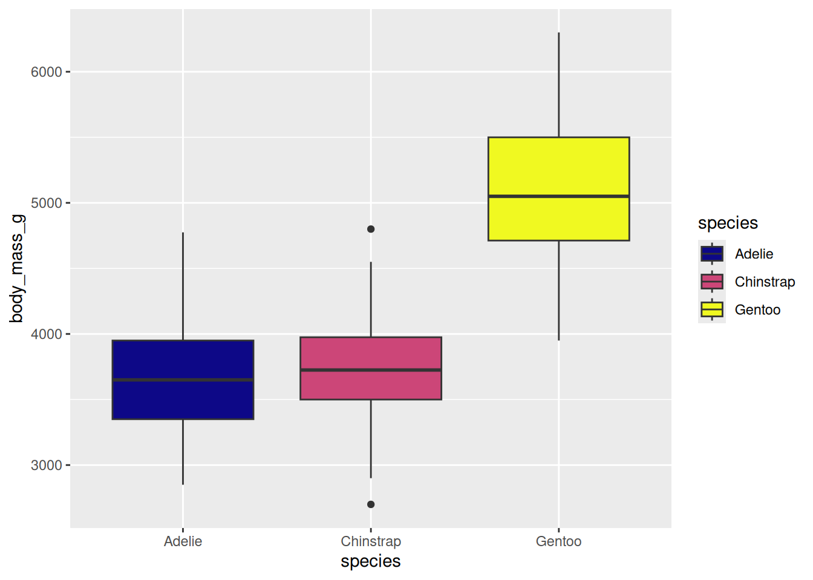
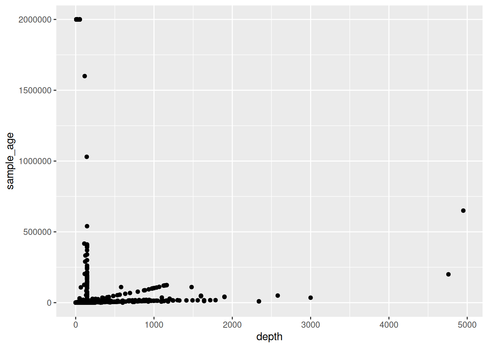
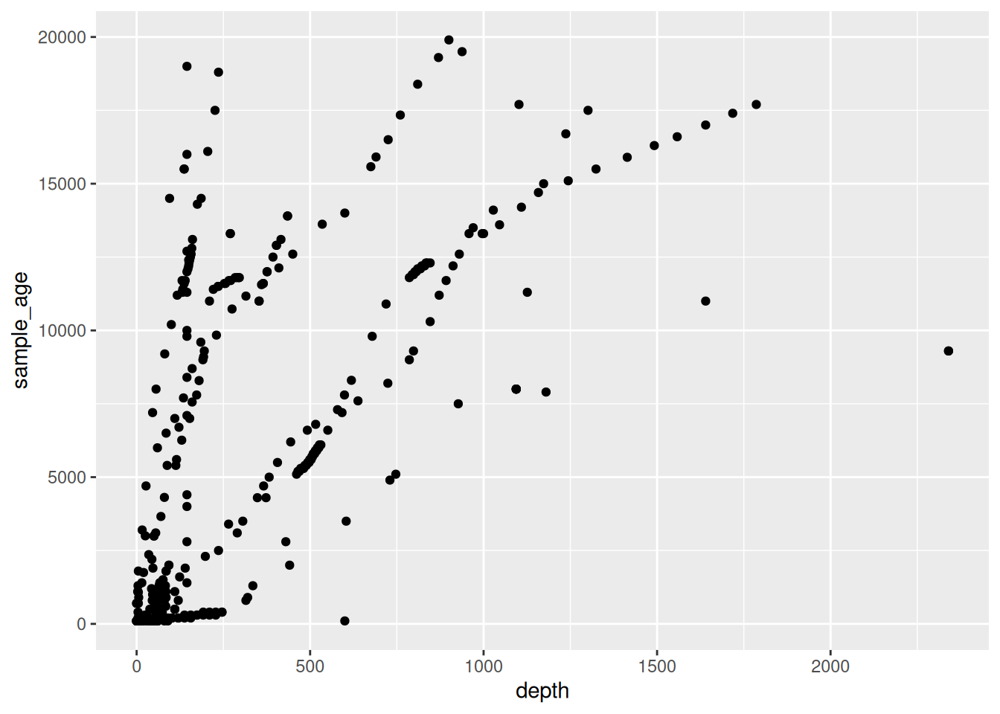
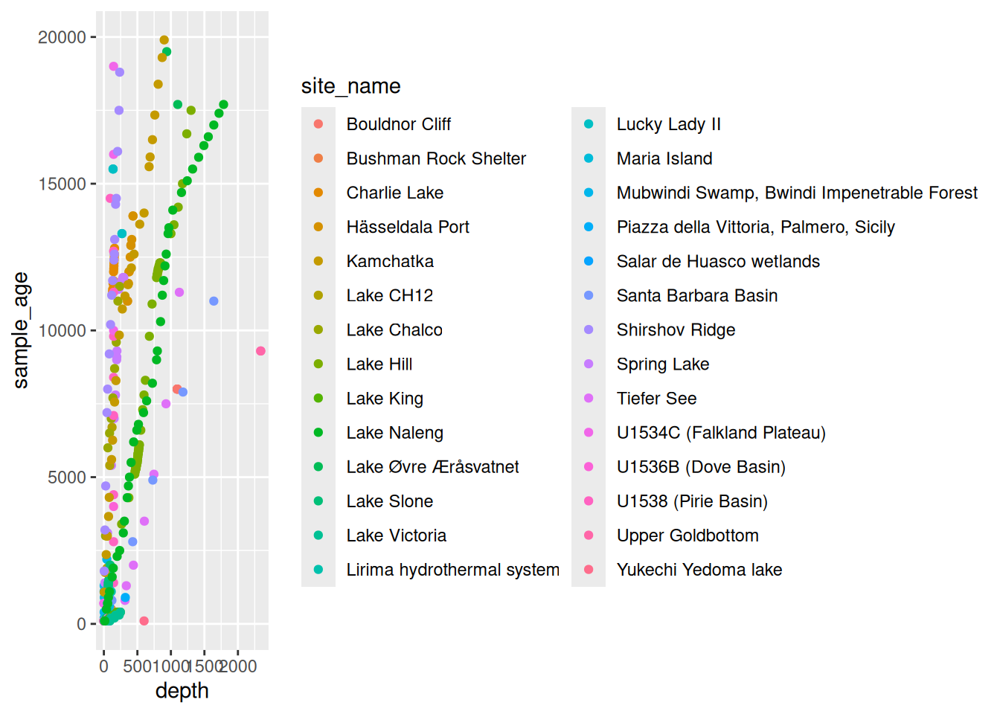

library(tidyverse)
library(palmerpenguins)7 Introduction to R and the Tidyverse
Note
This session is typically ran in parallel to the Introduction to Python and Pandas. Participants of the summer schools choose which to attend based on their prior experience. We recommend this session if you have no experience with neither R nor Python.
Self guided: chapter environment setup
For this chapter’s exercises, if not already performed, you will need to download the chapter’s dataset, decompress the archive, and create and activate the conda environment.
To do this, use wget or right click and save to download this Zenodo archive: 10.5281/zenodo.13758879, and unpack
tar xvf r-tidyverse.tar.gz
cd r-tidyverse/You can then create and subsequently activate the conda environment with
conda env create -f r-tidyverse.yml
conda activate r-tidyverse
README if you already have Rstudio installed and don’t need conda
Open Rstudio, and check that you have the two following packages installed.
If one or neither are installed, please install as follows. Delete already-installed packages from the function as necessary.
install.packages(c("tidyverse", "palmerpenguins"))
README if you want to create the test datasets yourself from the palmerpenguins package
install.packages(c("tidyverse", "palmerpenguins"))
library(magrittr)
set.seed(5678)
peng_prepped <- palmerpenguins::penguins %>%
dplyr::filter(
!dplyr::if_any(
.cols = tidyselect::everything(),
.fns = is.na
)
) %>%
tibble::add_column(., id = 1:nrow(.), .before = "species")
peng_prepped %>%
dplyr::slice_sample(n = 300) %>%
dplyr::arrange(id) %>%
dplyr::select(-bill_length_mm, -bill_depth_mm) %>%
readr::write_csv("penguins.csv")
peng_prepped %>%
dplyr::slice_sample(n = 300) %>%
dplyr::arrange(id) %>%
dplyr::select(id, bill_length_mm, bill_depth_mm) %>%
readr::write_csv("penguin_bills.csv")7.1 R, RStudio, the tidyverse and penguins
This chapter introduces the statistical programming environment R and how to use it with the RStudio editor. It is structured as self-study material with examples and little exercises to be completed in one to four hours. A larger exercise at the end pulls the individual units together.
The didactic idea behind this tutorial is to get as fast as possible to tangible, useful output, namely data visualisation. So we will first learn about reading and plotting data, and only later go to some common operations like conditional queries, data structure transformation and joins. We will focus exclusively on tabular data and how to handle it with the packages in the tidyverse framework. The example data used here is an ecological dataset about penguins.
So here is what you need to know for the beginning:
- R (R Core Team 2023) is a fully featured programming language, but it excels as an environment for (statistical) data analysis (https://www.r-project.org)
- RStudio (RStudio Team 2020) is an integrated development environment (IDE) for R (and other languages) (https://www.rstudio.com/products/rstudio)
- The tidyverse (Wickham et al. 2019) is a powerful collection of R packages with well-designed and consistent interfaces for the main steps of data analysis: loading, transforming and plotting data (https://www.tidyverse.org). This tutorial works with tidyverse ~v2.0. We will learn about the packages
readr,tibble,ggplot2,dplyr,magrittrandtidyr.forcatswill be briefly mentioned, butpurrrandstringrare left out. - The
palmerpenguinspackage (Horst, Hill, and Gorman 2020) provides a neat example dataset to learn data exploration and visualisation in R (https://allisonhorst.github.io/palmerpenguins)
7.2 Loading R Studio and preparing a project
Before we begin, we can load RStudio from within your conda environment, by running the following.
rstudio
Caution
It is not recommended to download and update Rstudio if asked to on loading while following this textbook or during the summer school. You do so at your own risk. We recommend pressing ‘Remind later’ or ‘Ignore’.
The RStudio window should then open.
Open RStudio and create a new project by going to the top tool bar, and selecting File -> New Project....
When asked, create the new directory in an ‘Existing directory’ and select the r-tidyverse/ directory.
Once created, add new R script file so that you can copy the relevant code from this textbook into it to run them by pressing in the top tool bar File -> New File -> New Rscript.
7.3 Loading data into tibbles
7.3.1 Reading tabular data with readr
With R we usually operate on data in our computer’s memory. The tidyverse provides the package readr to read data from text files into memory, both from our file system or the internet. It provides functions to read data in almost any (text) format.
readr::read_csv() # .csv files (comma-separated) -> see penguins.csv
readr::read_tsv() # .tsv files (tab-separated)
readr::read_delim() # tabular files with arbitrary separator
readr::read_fwf() # fixed width files (each column with a set number of tokens)
readr::read_lines() # files with any content per line for self-parsing7.3.2 How does the interface of read_csv work?
We can learn more about any R function with the ? operator: To open a help file for a specific function run ?<function_name> (e.g. ?readr::read_csv) in the R console.
readr::read_csv has many options to specify how to read a text file.
read_csv(
file, # The path to the file we want to read
col_names = TRUE, # Are there column names?
col_types = NULL, # Which types do the columns have? NULL -> auto
locale = default_locale(), # How is information encoded in this file?
na = c("", "NA"), # Which values mean "no data"
trim_ws = TRUE, # Should superfluous white-spaces be removed?
skip = 0, # Skip X lines at the beginning of the file
n_max = Inf, # Only read X lines
skip_empty_rows = TRUE, # Should empty lines be ignored?
comment = "", # Should comment lines be ignored?
name_repair = "unique", # How should "broken" column names be fixed
...
)When calling this - or any - function in R, we can either set the arguments explicitly by name or just by listing them in the correct order. That means readr::read_csv(file = "path/to/file.csv") and readr::read_csv("path/to/file.csv") are identical, because file = ... is the first argument of readr::read_csv().
7.3.3 What does readr produce? The tibble!
To read a .csv file (here "penguins.csv") into a variable (here peng_auto) run the following.
peng_auto <- readr::read_csv("penguins.csv")Rows: 300 Columns: 7
── Column specification ────────────────────────────────────────────────────────
Delimiter: ","
chr (3): species, island, sex
dbl (4): id, flipper_length_mm, body_mass_g, year
ℹ Use `spec()` to retrieve the full column specification for this data.
ℹ Specify the column types or set `show_col_types = FALSE` to quiet this message.As a by-product of reading the file readr also prints some information on the number and type of rows and columns it discovered in the file.
It automatically detects column types - but you can also define them manually.
peng <- readr::read_csv(
"penguins.csv",
col_types = "iccddcc" # this string encodes the desired types for each column
)The col_types argument takes a string with a list of characters, where each character denotes one columns types. Possible types are c = character, i = integer, d = double, l = logical, etc. Remember that you can check ?readr::read_csv for more.
readr finally returns an in-memory representation of the data in the file, a tibble. A tibble is a “data frame”, a tabular data structure with rows and columns. Unlike a simple array, each column can have another data type.
7.3.4 How to look at a tibble?
Typing the name of any object into the R console will print an overview of it to the console.
peng# A tibble: 300 × 7
id species island flipper_length_mm body_mass_g sex year
<int> <chr> <chr> <dbl> <dbl> <chr> <chr>
1 1 Adelie Torgersen 181 3750 male 2007
2 2 Adelie Torgersen 186 3800 female 2007
3 4 Adelie Torgersen 193 3450 female 2007
4 5 Adelie Torgersen 190 3650 male 2007
5 6 Adelie Torgersen 181 3625 female 2007
6 7 Adelie Torgersen 195 4675 male 2007
7 9 Adelie Torgersen 191 3800 male 2007
8 10 Adelie Torgersen 198 4400 male 2007
9 11 Adelie Torgersen 185 3700 female 2007
10 12 Adelie Torgersen 195 3450 female 2007
# ℹ 290 more rowsBut there are various other ways to inspect the content of a tibble
str(peng) # A structural overview of an R object
summary(peng) # A human-readable summary of an R object
View(peng) # Open RStudio's interactive data browser7.4 Plotting data in tibbles
7.4.1 ggplot2 and the “grammar of graphics”
To understand and present data, we usually have to visualise it.
ggplot2 is an R package that offers a slightly unusual, but powerful and logical interface for this task (Wickham 2016).
The following example describes a stacked bar chart.
library(ggplot2) # Loading a library to use its functions without ::ggplot( # Every plot starts with a call to the ggplot() function
data = peng # This function can also take the input tibble in the data argument
) + # The plot consists of individual functions linked with "+"
geom_bar( # "geoms" define the plot layers we want to draw,
# so in this case a bar-chart
mapping = aes( # The aes() function maps variables to visual properties
x = island, # publication_year -> x-axis
fill = species # community_type -> fill colour
)
)A geom_* combines data (here peng), a geometry (here vertical, stacked bars) and a statistical transformation (here counting the number of penguins per island and species). Each geom has different visual elements (e.g. an x- and a y-axis, shape and size of geometric elements, fill and border colour, …) to which we can map certain variables (columns) of our input dataset. The visual elements will then represent these variables in the plot. ggplot2 features many geoms: A good overview is provided by this cheatsheet: https://rstudio.github.io/cheatsheets/html/data-visualization.html.
Beyond geoms, a ggplot2 plot can be further specified with (among others) scales, facets and themes.
7.4.2 scales control the exact behaviour of visual elements
Here is another plot to demonstrate this: Boxplots of penguin weight per species.
ggplot(peng) +
geom_boxplot(mapping = aes(x = species, y = body_mass_g))Let’s assume we had some extreme outliers in this dataset. To simulate this, we replace some random weights with extreme values.
set.seed(1234) # we set a seed for reproducible randomness
peng_out <- peng
peng_out$body_mass_g[sample(1:nrow(peng_out), 10)] <- 50000 + 50000 * runif(10)Now we plot the dataset with these “outliers”.
ggplot(peng_out) +
geom_boxplot(aes(x = species, y = body_mass_g))This is not well readable, because the extreme outliers dictate the scale of the y-axis. A 50+kg penguin is a scary thought and we would probably remove these outliers, but let’s assume they were valid observation we want to include in the plot.
To mitigate the visualisation issue we can change the scale of different visual elements - e.g. the y-axis.
ggplot(peng_out) +
geom_boxplot(aes(x = species, y = body_mass_g)) +
scale_y_log10() # adding the log-scale improves readability
We will now go back to the normal dataset without the artificial outliers.
7.4.3 Colour scales
(Fill) colour is a visual element of a plot and its scaling can be adjusted as well.
ggplot(peng) +
geom_boxplot(aes(x = species, y = body_mass_g, fill = species)) +
scale_fill_viridis_d(option = "C")
We use the scale_* function to select one of the visually appealing (and robust to colourblindness) viridis colour palettes (https://cran.r-project.org/web/packages/viridis/vignettes/intro-to-viridis.html).
7.4.4 More variables! Defining plot matrices via facets
In the previous example we didn’t add additional information with the fill colour, as the plot already distinguished by species on the x-axis.
We can instead use colour to encode more information, for example by mapping the variable sex to it.
ggplot(peng) +
geom_boxplot(aes(x = species, y = body_mass_g, fill = sex))
Note how mapping another variable to the fill colour automatically splits the dataset and how this is reflected in the number of boxplots per species.
Another way to visualise more variables in one plot is to split the plot by categories into facets, so sub-plots per category. Here we split by sex, which is already mapped to the fill colour:
ggplot(peng) +
geom_boxplot(aes(x = species, y = body_mass_g, fill = sex)) +
facet_wrap(~sex)
The fill colour is therefore free again to show yet another variable, for example the year a given penguin was examined.
ggplot(peng) +
geom_boxplot(aes(x = species, y = body_mass_g, fill = year)) +
facet_wrap(~sex)This plot already visualises the relationship of four variables: species, body mass, sex and year of observation.
7.4.5 Setting purely aesthetic settings with theme
Aesthetic changes can be applied as part of the theme, which allows for very detailed configuration (see ?theme).
Here we rotate the x-axis labels by 45°, which often helps to resolve over-plotting.
ggplot(peng) +
geom_boxplot(aes(x = species, y = body_mass_g, fill = year)) +
facet_wrap(~sex) +
theme(axis.text.x = element_text(angle = 45, hjust = 1, vjust = 1))7.4.6 Ordering elements in a plot with factors
R supports defining ordinal data with factors. This can be used to set the order of elements in a plot, e.g. the order of bars in a bar chart.
We do not cover factors beyond the following example here, although the tidyverse includes a package (forcats) specifically for handling them.
Elements based on character columns are by default ordered alphabetically.
ggplot(peng) +
geom_bar(aes(x = species)) # bars are alphabetically orderedWith forcats::fct_reorder we can transform an input vector to a factor, ordered by a summary statistic (even based on another vector).
peng2 <- peng
peng2$species_ordered <- forcats::fct_reorder(
peng2$species,
peng2$species, length
)With this change, the plot will be ordered according to the intrinsic order defined for species_ordered.
ggplot(peng2) +
geom_bar(aes(x = species_ordered)) # bars are ordered by size7.4.7 Exercise
Look at the
mtcarsdataset and read up on the meaning of its variables with the help operator?.mtcarsis a test dataset integrated in R and can always be accessed just by typingmtcarsin the console.Visualise the relationship between Gross horsepower and 1/4 mile time.
- Integrate the Number of cylinders into your plot as an additional variable.
Possible solutions
?mtcars[, 1] mpg Miles/(US) gallon
[, 2] cyl Number of cylinders
[, 3] disp Displacement (cu.in.)
[, 4] hp Gross horsepower
[, 5] drat Rear axle ratio
[, 6] wt Weight (1000 lbs)
[, 7] qsec 1/4 mile time
[, 8] vs Engine (0 = V-shaped, 1 = straight)
[, 9] am Transmission (0 = automatic, 1 = manual)
[,10] gear Number of forward gears
[,11] carb Number of carburetorsggplot(mtcars) +
geom_point(aes(x = hp, y = qsec))ggplot(mtcars) +
geom_point(aes(x = hp, y = qsec, color = as.factor(cyl)))7.5 Conditional queries on tibbles
7.5.1 Selecting columns and filtering rows with select and filter
Among the most basic tabular data transformation operations is the conditional selection of columns and rows. The dplyr package includes powerful functions to subset data in tibbles.
dplyr::select allows to select columns:
dplyr::select(peng, id, flipper_length_mm) # select two columns# A tibble: 300 × 2
id flipper_length_mm
<int> <dbl>
1 1 181
2 2 186
3 4 193
4 5 190
5 6 181
# ℹ 295 more rowsdplyr::select(peng, -island, -flipper_length_mm) # remove two columns# A tibble: 300 × 5
id species body_mass_g sex year
<int> <chr> <dbl> <chr> <chr>
1 1 Adelie 3750 male 2007
2 2 Adelie 3800 female 2007
3 4 Adelie 3450 female 2007
4 5 Adelie 3650 male 2007
5 6 Adelie 3625 female 2007
# ℹ 295 more rowsdplyr::filter allows for conditional filtering of rows:
dplyr::filter(peng, year == 2007) # penguins examined in 2007# A tibble: 93 × 7
id species island flipper_length_mm body_mass_g sex year
<int> <chr> <chr> <dbl> <dbl> <chr> <chr>
1 1 Adelie Torgersen 181 3750 male 2007
2 2 Adelie Torgersen 186 3800 female 2007
3 4 Adelie Torgersen 193 3450 female 2007
4 5 Adelie Torgersen 190 3650 male 2007
5 6 Adelie Torgersen 181 3625 female 2007
# ℹ 88 more rows# penguins examined in 2007 OR 2009
dplyr::filter(peng, year == 2007 | year == 2009)# A tibble: 198 × 7
id species island flipper_length_mm body_mass_g sex year
<int> <chr> <chr> <dbl> <dbl> <chr> <chr>
1 1 Adelie Torgersen 181 3750 male 2007
2 2 Adelie Torgersen 186 3800 female 2007
3 4 Adelie Torgersen 193 3450 female 2007
4 5 Adelie Torgersen 190 3650 male 2007
5 6 Adelie Torgersen 181 3625 female 2007
# ℹ 193 more rows# an alternative way to express OR with the match operator "%in%"
dplyr::filter(peng, year %in% c(2007, 2009))# A tibble: 198 × 7
id species island flipper_length_mm body_mass_g sex year
<int> <chr> <chr> <dbl> <dbl> <chr> <chr>
1 1 Adelie Torgersen 181 3750 male 2007
2 2 Adelie Torgersen 186 3800 female 2007
3 4 Adelie Torgersen 193 3450 female 2007
4 5 Adelie Torgersen 190 3650 male 2007
5 6 Adelie Torgersen 181 3625 female 2007
# ℹ 193 more rows# Adelie penguins heavier than 4kg
dplyr::filter(peng, species == "Adelie" & body_mass_g >= 4000)# A tibble: 29 × 7
id species island flipper_length_mm body_mass_g sex year
<int> <chr> <chr> <dbl> <dbl> <chr> <chr>
1 7 Adelie Torgersen 195 4675 male 2007
2 10 Adelie Torgersen 198 4400 male 2007
3 13 Adelie Torgersen 197 4500 male 2007
4 31 Adelie Dream 196 4150 male 2007
5 39 Adelie Dream 196 4400 male 2007
# ℹ 24 more rowsNote how each function here takes peng as a first argument. This invites a more elegant syntax.
7.5.2 Chaining functions together with the pipe %>%
A core feature of the tidyverse is the pipe %>% in the magrittr package. This ‘infix’ operator allows to chain data and operations for concise and clear data analysis syntax.
library(magrittr)
peng %>% dplyr::filter(year == 2007)# A tibble: 93 × 7
id species island flipper_length_mm body_mass_g sex year
<int> <chr> <chr> <dbl> <dbl> <chr> <chr>
1 1 Adelie Torgersen 181 3750 male 2007
2 2 Adelie Torgersen 186 3800 female 2007
3 4 Adelie Torgersen 193 3450 female 2007
4 5 Adelie Torgersen 190 3650 male 2007
5 6 Adelie Torgersen 181 3625 female 2007
# ℹ 88 more rowsIt forwards the LHS (left-hand side) of %>% as the first argument of the function appearing on the RHS (right-hand side) to enable sequences of function calls (“tidyverse style”).
peng %>%
dplyr::select(id, species, body_mass_g) %>%
dplyr::filter(species == "Adelie" & body_mass_g >= 4000) %>%
nrow() # count the resulting rows[1] 29magrittr also offers some more operators, among which the extraction operator %$% is particularly useful to easily extract individual variables from a tibble.
peng %>%
dplyr::filter(island == "Biscoe") %$%
species %>% # extract the species column as a vector
unique() # get the unique elements of said vector[1] "Adelie" "Gentoo"Here we already use the base R summary function unique.
7.5.3 Summary statistics in base R
Summarising and counting data is indispensable and R offers a variety of basic operations in its base package. Many of them operate on vectors, so lists of values of one type. Individual columns are vectors.
# we extract a single variable as a vector of values
chinstraps_weights <- peng %>%
dplyr::filter(species == "Chinstrap") %$%
body_mass_g
chinstraps_weights [1] 3500 3900 3650 3525 3725 3950 3250 3750 4150 3700 3800 3775 3700 4050 4050
[16] 3300 3450 4400 3400 2900 3800 3300 4150 3400 3800 3700 4550 3200 4300 3350
[31] 4100 3600 3900 3850 4800 2700 4500 3950 3650 3550 3500 3675 4450 3400 4300
[46] 3675 3325 3950 3600 4050 3350 3450 3250 4050 3800 3525 3950 3650 3650 4000
[61] 3775 4100 3775length(chinstraps_weights) # length/size of a vector[1] 63unique(chinstraps_weights) # unique elements of a vector [1] 3500 3900 3650 3525 3725 3950 3250 3750 4150 3700 3800 3775 4050 3300 3450
[16] 4400 3400 2900 4550 3200 4300 3350 4100 3600 3850 4800 2700 4500 3550 3675
[31] 4450 3325 4000min(chinstraps_weights) # minimum[1] 2700max(chinstraps_weights) # maximum[1] 4800mean(chinstraps_weights) # mean[1] 3751.19median(chinstraps_weights) # median[1] 3725var(chinstraps_weights) # variance[1] 153032.8sd(chinstraps_weights) # standard deviation[1] 391.1941# quantiles for the given probabilities
quantile(chinstraps_weights, probs = c(0.25, 0.75)) 25% 75%
3500 3975 Many of these functions can ignore missing values (so NA values) with the option na.rm = TRUE.
7.5.4 Group-wise summaries with group_by and summarise
These vector summary statistics are particular useful when applied to conditional subsets of a dataset.
dplyr allows such summary operations with a combination of the functions group_by and summarise, where the former tags a tibble with categories based on its variables and the latter reduces it to these groups while simultaneously creating new columns.
peng %>%
# group the tibble by the material column
dplyr::group_by(species) %>%
dplyr::summarise(
# new col: min weight for each group
min_weight = min(body_mass_g),
# new col: median weight for each group
median_weight = median(body_mass_g),
# new col: max weight for each group
max_weight = max(body_mass_g)
)# A tibble: 3 × 4
species min_weight median_weight max_weight
<chr> <dbl> <dbl> <dbl>
1 Adelie 2850 3650 4775
2 Chinstrap 2700 3725 4800
3 Gentoo 3950 5050 6300Grouping can also be applied across multiple columns at once.
peng %>%
# group by species and year
dplyr::group_by(species, year) %>%
dplyr::summarise(
# new col: number of penguins for each group
n = dplyr::n(),
# drop the grouping after this summary operation
.groups = "drop"
)# A tibble: 9 × 3
species year n
<chr> <chr> <int>
1 Adelie 2007 38
2 Adelie 2008 45
3 Adelie 2009 43
4 Chinstrap 2007 23
5 Chinstrap 2008 18
# ℹ 4 more rowsIf we group by more than one variable, then summarise will not entirely remove the group tagging when generating the result dataset. We can force this with .groups = "drop" to avoid undesired behaviour with this dataset later on.
7.5.5 Sorting and slicing tibbles with arrange and slice
dplyr allows to arrange tibbles by one or multiple columns.
peng %>% dplyr::arrange(sex) # sort by sex# A tibble: 300 × 7
id species island flipper_length_mm body_mass_g sex year
<int> <chr> <chr> <dbl> <dbl> <chr> <chr>
1 2 Adelie Torgersen 186 3800 female 2007
2 4 Adelie Torgersen 193 3450 female 2007
3 6 Adelie Torgersen 181 3625 female 2007
4 11 Adelie Torgersen 185 3700 female 2007
5 12 Adelie Torgersen 195 3450 female 2007
# ℹ 295 more rowspeng %>% dplyr::arrange(sex, body_mass_g) # sort by sex and weight# A tibble: 300 × 7
id species island flipper_length_mm body_mass_g sex year
<int> <chr> <chr> <dbl> <dbl> <chr> <chr>
1 304 Chinstrap Dream 192 2700 female 2008
2 53 Adelie Biscoe 181 2850 female 2008
3 59 Adelie Biscoe 184 2850 female 2008
4 49 Adelie Biscoe 187 2900 female 2008
5 111 Adelie Torgersen 188 2900 female 2009
# ℹ 295 more rowspeng %>% dplyr::arrange(dplyr::desc(body_mass_g)) # sort descending# A tibble: 300 × 7
id species island flipper_length_mm body_mass_g sex year
<int> <chr> <chr> <dbl> <dbl> <chr> <chr>
1 164 Gentoo Biscoe 221 6300 male 2007
2 179 Gentoo Biscoe 230 6050 male 2007
3 260 Gentoo Biscoe 222 6000 male 2009
4 224 Gentoo Biscoe 223 5950 male 2008
5 160 Gentoo Biscoe 213 5850 male 2007
# ℹ 295 more rowsSorting also works within groups and can be paired with slice to extract extreme values per group.
Here we extract the three heaviest individuals per species.
peng %>%
dplyr::group_by(species) %>% # group by species
dplyr::arrange(dplyr::desc(body_mass_g)) %>% # sort by weight within groups
dplyr::slice_head(n = 3) %>% # keep the first three penguins per group
dplyr::ungroup() # remove the still lingering grouping# A tibble: 9 × 7
id species island flipper_length_mm body_mass_g sex year
<int> <chr> <chr> <dbl> <dbl> <chr> <chr>
1 104 Adelie Biscoe 197 4775 male 2009
2 96 Adelie Biscoe 203 4725 male 2009
3 76 Adelie Torgersen 196 4700 male 2008
4 303 Chinstrap Dream 210 4800 male 2008
5 295 Chinstrap Dream 205 4550 male 2008
# ℹ 4 more rowsSlicing is also the relevant operation to take random samples from the observations in a tibble.
peng %>% dplyr::slice_sample(n = 10)# A tibble: 10 × 7
id species island flipper_length_mm body_mass_g sex year
<int> <chr> <chr> <dbl> <dbl> <chr> <chr>
1 47 Adelie Biscoe 190 3450 female 2008
2 239 Gentoo Biscoe 214 4850 female 2009
3 221 Gentoo Biscoe 209 4600 female 2008
4 104 Adelie Biscoe 197 4775 male 2009
5 138 Adelie Dream 190 3725 male 2009
# ℹ 5 more rows7.5.6 Exercise
For this exercise we once more go back to the mtcars dataset. See ?mtcars for details.
- Determine the number of cars with four forward gears (
gear) in themtcarsdataset.
- Determine the mean 1/4 mile time (
qsec) per Number of cylinders (cyl) group.
- Identify the least efficient (see
mpg) cars for both transmission types (am).
Possible solutions
mtcars %>%
dplyr::filter(gear == 4) %>%
nrow()[1] 12mtcars %>%
dplyr::group_by(cyl) %>%
dplyr::summarise(
qsec_mean = mean(qsec)
)# A tibble: 3 × 2
cyl qsec_mean
<dbl> <dbl>
1 4 19.1
2 6 18.0
3 8 16.8# make the care name an explicit column
mtcars2 <- tibble::rownames_to_column(mtcars, var = "car")
# Solution 1
mtcars2 %>%
dplyr::group_by(am) %>%
dplyr::arrange(mpg) %>%
dplyr::slice_head(n = 1) %$%
car[1] "Cadillac Fleetwood" "Maserati Bora" # Solution 1 only returns n = 1 result per group even if
# there are multiple cars with the same minimal mpg value.
# Solution 2 shows both, if this is desired.
# Solution 2
mtcars2 %>%
dplyr::group_by(am) %>%
dplyr::filter(mpg == min(mpg)) %$%
car[1] "Cadillac Fleetwood" "Lincoln Continental" "Maserati Bora" 7.6 Transforming and manipulating tibbles
7.6.1 Renaming and reordering columns with rename and relocate
Columns in tibbles can be renamed with dplyr::rename.
peng %>% dplyr::rename(penguin_name = id) # rename a column# A tibble: 300 × 7
penguin_name species island flipper_length_mm body_mass_g sex year
<int> <chr> <chr> <dbl> <dbl> <chr> <chr>
1 1 Adelie Torgersen 181 3750 male 2007
2 2 Adelie Torgersen 186 3800 female 2007
3 4 Adelie Torgersen 193 3450 female 2007
4 5 Adelie Torgersen 190 3650 male 2007
5 6 Adelie Torgersen 181 3625 female 2007
# ℹ 295 more rowsAnd with dplyr::relocate they can be reordered.
peng %>% dplyr::relocate(year, .before = species) # reorder columns# A tibble: 300 × 7
id year species island flipper_length_mm body_mass_g sex
<int> <chr> <chr> <chr> <dbl> <dbl> <chr>
1 1 2007 Adelie Torgersen 181 3750 male
2 2 2007 Adelie Torgersen 186 3800 female
3 4 2007 Adelie Torgersen 193 3450 female
4 5 2007 Adelie Torgersen 190 3650 male
5 6 2007 Adelie Torgersen 181 3625 female
# ℹ 295 more rows7.6.2 Adding columns to tibbles with mutate and transmute.
A common application of data manipulation is adding new, derived columns, that combine or modify the information in the already available columns. dplyr offers this core feature with the mutate function.
peng %>%
dplyr::mutate(
# add a column as a modification of an existing column
kg = body_mass_g / 1000
)# A tibble: 300 × 8
id species island flipper_length_mm body_mass_g sex year kg
<int> <chr> <chr> <dbl> <dbl> <chr> <chr> <dbl>
1 1 Adelie Torgersen 181 3750 male 2007 3.75
2 2 Adelie Torgersen 186 3800 female 2007 3.8
3 4 Adelie Torgersen 193 3450 female 2007 3.45
4 5 Adelie Torgersen 190 3650 male 2007 3.65
5 6 Adelie Torgersen 181 3625 female 2007 3.62
# ℹ 295 more rowsdplyr::transmute has the same interface as dplyr::mutate, but it removes all columns except for the newly created ones.
peng %>%
dplyr::transmute(
# overwrite the id column with a modified version
id = paste("Penguin Nr.", id), # paste() concatenates strings
flipper_length_mm # select this column without modifying it
)# A tibble: 300 × 2
id flipper_length_mm
<chr> <dbl>
1 Penguin Nr. 1 181
2 Penguin Nr. 2 186
3 Penguin Nr. 4 193
4 Penguin Nr. 5 190
5 Penguin Nr. 6 181
# ℹ 295 more rowstibble::add_column behaves as dplyr::mutate, but gives more control over column position.
peng %>% tibble::add_column(
# add a modified version of a column
# note the . representing the LHS of the pipe
flipper_length_cm = .$flipper_length_mm / 10,
# add the columns after this particular other columns
.after = "flipper_length_mm"
)# A tibble: 300 × 8
id species island flipper_length_mm flipper_length_cm body_mass_g sex
<int> <chr> <chr> <dbl> <dbl> <dbl> <chr>
1 1 Adelie Torgersen 181 18.1 3750 male
2 2 Adelie Torgersen 186 18.6 3800 female
3 4 Adelie Torgersen 193 19.3 3450 female
4 5 Adelie Torgersen 190 19 3650 male
5 6 Adelie Torgersen 181 18.1 3625 female
# ℹ 295 more rows
# ℹ 1 more variable: year <chr>dplyr::mutate can also be combined with dplyr::group_by (instead of dplyr::summarise) to add information on a group level. This is relevant, when a value for an individual entity should be put into context of a group-wise summary statistic.
Here is a realistic sequence of operations that makes use of this feature:
peng %>%
dplyr::group_by(species, sex, year) %>%
dplyr::mutate(
mean_weight = mean(body_mass_g, na.rm = T),
relation_to_mean = body_mass_g / mean_weight
) %>%
dplyr::ungroup() %>%
# mutate does not remove rows, unlike summarise, so we use select
dplyr::select(id, species, sex, year, relation_to_mean) %>%
dplyr::arrange(dplyr::desc(relation_to_mean))# A tibble: 300 × 5
id species sex year relation_to_mean
<int> <chr> <chr> <chr> <dbl>
1 104 Adelie male 2009 1.21
2 96 Adelie male 2009 1.20
3 274 Chinstrap female 2007 1.17
4 7 Adelie male 2007 1.17
5 303 Chinstrap male 2008 1.16
# ℹ 295 more rows7.6.3 Conditional operations with ifelse, case_when and case_match
ifelse allows to implement conditional mutate operations, that consider information from other columns.
peng %>% dplyr::mutate(
weight = ifelse(
# is weight below or above mean weight?
test = body_mass_g >= 4200,
yes = "above mean",
no = "below mean"
)
)# A tibble: 300 × 8
id species island flipper_length_mm body_mass_g sex year weight
<int> <chr> <chr> <dbl> <dbl> <chr> <chr> <chr>
1 1 Adelie Torgersen 181 3750 male 2007 below mean
2 2 Adelie Torgersen 186 3800 female 2007 below mean
3 4 Adelie Torgersen 193 3450 female 2007 below mean
4 5 Adelie Torgersen 190 3650 male 2007 below mean
5 6 Adelie Torgersen 181 3625 female 2007 below mean
# ℹ 295 more rowsifelse gets cumbersome for more than two cases. dplyr::case_when is more readable and scales much better for this application.
peng %>% dplyr::mutate(
weight = dplyr::case_when(
# the number of conditions is arbitrary
body_mass_g >= 4200 ~ "above mean",
body_mass_g < 4200 ~ "below mean",
TRUE ~ "unknown" # TRUE catches all remaining cases
)
)# A tibble: 300 × 8
id species island flipper_length_mm body_mass_g sex year weight
<int> <chr> <chr> <dbl> <dbl> <chr> <chr> <chr>
1 1 Adelie Torgersen 181 3750 male 2007 below mean
2 2 Adelie Torgersen 186 3800 female 2007 below mean
3 4 Adelie Torgersen 193 3450 female 2007 below mean
4 5 Adelie Torgersen 190 3650 male 2007 below mean
5 6 Adelie Torgersen 181 3625 female 2007 below mean
# ℹ 295 more rowsdplyr::case_match is similar, but unlike dplyr::case_when it does not check logical expressions, but matches by value.
peng %>%
dplyr::mutate(
island_rating = dplyr::case_match(
island,
"Torgersen" ~ "My favourite island",
"Biscoe" ~ "Overrated tourist trap",
"Dream" ~ "Lost my wallet there. 4/10"
)
) %>%
# here we use group_by+summarise only to show the result
dplyr::group_by(island, island_rating) %>%
dplyr::summarise(.groups = "drop")# A tibble: 3 × 2
island island_rating
<chr> <chr>
1 Biscoe Overrated tourist trap
2 Dream Lost my wallet there. 4/10
3 Torgersen My favourite island 7.6.4 Switching between long and wide data with pivot_longer and pivot_wider
To simplify certain analysis or plotting operations data often has to be transformed from a wide to a long format or vice versa (Figure 7.1). Both data formats have useful applications and usually a given R function requires either, so we need to know how to convert between the two.
- A table in wide format has N key columns and N value columns.
- A table in long format has N key columns, one descriptor column and one value column.
Here is an example of a wide dataset. It features information about the number of cars sold per year per brand at a dealership.
carsales <- tibble::tribble(
~brand, ~`2014`, ~`2015`, ~`2016`, ~`2017`,
"BMW", 20, 25, 30, 45,
"VW", 67, 40, 120, 55
)
carsales# A tibble: 2 × 5
brand `2014` `2015` `2016` `2017`
<chr> <dbl> <dbl> <dbl> <dbl>
1 BMW 20 25 30 45
2 VW 67 40 120 55In this wide format information is spread over many columns. Based on what we learned previously we can not easily plot it with ggplot2. Although it is often more verbose and includes more duplication, in the tidyverse we generally prefer data in long, “tidy” format – well justified by Wickham (2014).
To transform this dataset to a long format, we can apply tidyr::pivot_longer.
carsales_long <- carsales %>% tidyr::pivot_longer(
# define a set of columns to transform
cols = tidyselect::num_range("", range = 2014:2017),
# the name of the descriptor column we want
names_to = "year",
# a function transform names to values
names_transform = as.integer,
# the name of the value column we want
values_to = "sales"
)
carsales_long# A tibble: 8 × 3
brand year sales
<chr> <int> <dbl>
1 BMW 2014 20
2 BMW 2015 25
3 BMW 2016 30
4 BMW 2017 45
5 VW 2014 67
# ℹ 3 more rowsWide datasets are not always the wrong choice. They are well suitable for example for adjacency matrices to represent graphs, covariance matrices or other pairwise statistics. When the data gets big, then wide formats can be significantly more efficient (e.g. for spatial data).
To transform data from long to wide, we can use tidyr::pivot_wider
carsales_wide <- carsales_long %>% tidyr::pivot_wider(
# the set of id columns that should not be changed
id_cols = "brand",
# the descriptor column with the names of the new columns
names_from = year,
# the value column from which the values should be extracted
values_from = sales
)
carsales_wide# A tibble: 2 × 5
brand `2014` `2015` `2016` `2017`
<chr> <dbl> <dbl> <dbl> <dbl>
1 BMW 20 25 30 45
2 VW 67 40 120 557.6.5 Exercise
- Move the column
gearto the first position of themtcarsdataset.
- Make a new dataset
mtcars2frommtcarswith only the columnsgearandam_v.am_vshould be a new column which encodes the transmission type (am) as either"manual"or"automatic".
- Count the number of cars per transmission type (
am_v) and number of gears (gear) inmtcars2. Then transform the result to a wide format, with one column per transmission type.
Possible solutions
mtcars %>%
dplyr::relocate(gear, .before = mpg) %>%
tibble::as_tibble() # transforming the raw dataset for better printing# A tibble: 32 × 11
gear mpg cyl disp hp drat wt qsec vs am carb
<dbl> <dbl> <dbl> <dbl> <dbl> <dbl> <dbl> <dbl> <dbl> <dbl> <dbl>
1 4 21 6 160 110 3.9 2.62 16.5 0 1 4
2 4 21 6 160 110 3.9 2.88 17.0 0 1 4
3 4 22.8 4 108 93 3.85 2.32 18.6 1 1 1
4 3 21.4 6 258 110 3.08 3.22 19.4 1 0 1
5 3 18.7 8 360 175 3.15 3.44 17.0 0 0 2
# ℹ 27 more rowsmtcars2 <- mtcars %>%
dplyr::transmute(
gear,
am_v = dplyr::case_match(
am,
0 ~ "automatic",
1 ~ "manual"
)
) %>%
tibble::as_tibble()
mtcars2# A tibble: 32 × 2
gear am_v
<dbl> <chr>
1 4 manual
2 4 manual
3 4 manual
4 3 automatic
5 3 automatic
# ℹ 27 more rowsmtcars2 %>%
dplyr::group_by(am_v, gear) %>%
# dplyr::tally() is identical to dplyr::summarise(n = dplyr::n())
# -> it counts the number of entities in a group
dplyr::tally() %>%
tidyr::pivot_wider(
names_from = am_v,
values_from = n
)# A tibble: 3 × 3
gear automatic manual
<dbl> <int> <int>
1 3 15 NA
2 4 4 8
3 5 NA 57.7 Combining tibbles with join operations
7.7.1 Types of joins
Joins combine two datasets x and y based on overlapping key columns. We can generally distinguish two kinds of joins:
Mutating joins add columns and rows of x and y:
- Left join: Take observations from x and add fitting information from y.
- Right join: Take observations from y and add fitting information from x.
- Inner join: Join the overlapping observations from x and y.
- Full join: Join all observations from x and y, even if information is missing.
Filtering joins remove observations from x based on their presence in y.
- Semi join: Keep every observation in x that is in y.
- Anti join: Keep every observation in x that is not in y.
The following sections will introduce each join with an example.
To experiment with joins, we need a second dataset with complementary information. This new dataset contains additional variables for a subset of the penguins in our first dataset – both datasets feature 300 penguins, but only with a partial overlap in individuals.
bills <- readr::read_csv("penguin_bills.csv")# A tibble: 300 × 3
id bill_length_mm bill_depth_mm
<dbl> <dbl> <dbl>
1 1 39.1 18.7
2 2 39.5 17.4
3 3 40.3 18
4 4 36.7 19.3
5 5 39.3 20.6
# ℹ 295 more rows7.7.2 Left join with left_join
Take observations from x and add fitting information from y (Figure 7.2).

dplyr::left_join(
x = peng, # 300 observations
y = bills, # 300 observations
by = "id" # the key column by which to join
)# A tibble: 300 × 9
id species island flipper_length_mm body_mass_g sex year bill_length_mm
<dbl> <chr> <chr> <dbl> <dbl> <chr> <chr> <dbl>
1 1 Adelie Torger… 181 3750 male 2007 39.1
2 2 Adelie Torger… 186 3800 fema… 2007 39.5
3 4 Adelie Torger… 193 3450 fema… 2007 36.7
4 5 Adelie Torger… 190 3650 male 2007 39.3
5 6 Adelie Torger… 181 3625 fema… 2007 38.9
# ℹ 295 more rows
# ℹ 1 more variable: bill_depth_mm <dbl>Left joins are the most common join operation: Add information from y to the main dataset x.
7.7.3 Right join with right_join
Take observations from y and add fitting information from x (Figure 7.3).
dplyr::right_join(
x = peng, # 300 observations
y = bills, # 300 observations
by = "id"
) %>%
# we arrange by id to highlight the missing observation in the peng dataset
dplyr::arrange(id)# A tibble: 300 × 9
id species island flipper_length_mm body_mass_g sex year bill_length_mm
<dbl> <chr> <chr> <dbl> <dbl> <chr> <chr> <dbl>
1 1 Adelie Torger… 181 3750 male 2007 39.1
2 2 Adelie Torger… 186 3800 fema… 2007 39.5
3 3 <NA> <NA> NA NA <NA> <NA> 40.3
4 4 Adelie Torger… 193 3450 fema… 2007 36.7
5 5 Adelie Torger… 190 3650 male 2007 39.3
# ℹ 295 more rows
# ℹ 1 more variable: bill_depth_mm <dbl>Right joins are almost identical to left joins – only x and y have reversed roles.
7.7.4 Inner join with inner_join
Join the overlapping observations from x and y (Figure 7.4).

dplyr::inner_join(
x = peng, # 300 observations
y = bills, # 300 observations
by = "id"
)# A tibble: 275 × 9
id species island flipper_length_mm body_mass_g sex year bill_length_mm
<dbl> <chr> <chr> <dbl> <dbl> <chr> <chr> <dbl>
1 1 Adelie Torger… 181 3750 male 2007 39.1
2 2 Adelie Torger… 186 3800 fema… 2007 39.5
3 4 Adelie Torger… 193 3450 fema… 2007 36.7
4 5 Adelie Torger… 190 3650 male 2007 39.3
5 6 Adelie Torger… 181 3625 fema… 2007 38.9
# ℹ 270 more rows
# ℹ 1 more variable: bill_depth_mm <dbl>Inner joins are a fast and easy way to check to which degree two dataset overlap.
7.7.5 Full join with full_join
Join all observations from x and y, even if information is missing (Figure 7.5).

dplyr::full_join(
x = peng, # 300 observations
y = bills, # 300 observations
by = "id"
) %>% dplyr::arrange(id)# A tibble: 325 × 9
id species island flipper_length_mm body_mass_g sex year bill_length_mm
<dbl> <chr> <chr> <dbl> <dbl> <chr> <chr> <dbl>
1 1 Adelie Torger… 181 3750 male 2007 39.1
2 2 Adelie Torger… 186 3800 fema… 2007 39.5
3 3 <NA> <NA> NA NA <NA> <NA> 40.3
4 4 Adelie Torger… 193 3450 fema… 2007 36.7
5 5 Adelie Torger… 190 3650 male 2007 39.3
# ℹ 320 more rows
# ℹ 1 more variable: bill_depth_mm <dbl>Full joins allow to preserve every bit of information.
7.7.6 Semi join with semi_join
Keep every observation in x that is in y (Figure 7.6).

dplyr::semi_join(
x = peng, # 300 observations
y = bills, # 300 observations
by = "id"
)# A tibble: 275 × 7
id species island flipper_length_mm body_mass_g sex year
<int> <chr> <chr> <dbl> <dbl> <chr> <chr>
1 1 Adelie Torgersen 181 3750 male 2007
2 2 Adelie Torgersen 186 3800 female 2007
3 4 Adelie Torgersen 193 3450 female 2007
4 5 Adelie Torgersen 190 3650 male 2007
5 6 Adelie Torgersen 181 3625 female 2007
# ℹ 270 more rowsSemi joins are underused (!) operations to filter datasets.
7.7.7 Anti join with anti_join
Keep every observation in x that is not in y (Figure 7.7).
dplyr::anti_join(
x = peng, # 300 observations
y = bills, # 300 observations
by = "id"
)# A tibble: 25 × 7
id species island flipper_length_mm body_mass_g sex year
<int> <chr> <chr> <dbl> <dbl> <chr> <chr>
1 22 Adelie Biscoe 183 3550 male 2007
2 34 Adelie Dream 181 3300 female 2007
3 74 Adelie Torgersen 195 4000 male 2008
4 92 Adelie Dream 196 4350 male 2008
5 99 Adelie Biscoe 193 2925 female 2009
# ℹ 20 more rowsAnti joins allow to quickly determine what information is missing in a dataset compared to an other one.
7.7.8 Exercise
Consider the following additional dataset with my opinions on cars with a specific number of gears:
gear_opinions <- tibble::tibble(
gear = c(3, 5),
opinion = c("boring", "wow")
)- Add my opinions about gears to the
mtcarsdataset.
- Remove all cars from the dataset for which I do not have an opinion.
Possible solutions
dplyr::left_join(mtcars, gear_opinions, by = "gear") %>%
tibble::as_tibble()# A tibble: 32 × 12
mpg cyl disp hp drat wt qsec vs am gear carb opinion
<dbl> <dbl> <dbl> <dbl> <dbl> <dbl> <dbl> <dbl> <dbl> <dbl> <dbl> <chr>
1 21 6 160 110 3.9 2.62 16.5 0 1 4 4 <NA>
2 21 6 160 110 3.9 2.88 17.0 0 1 4 4 <NA>
3 22.8 4 108 93 3.85 2.32 18.6 1 1 4 1 <NA>
4 21.4 6 258 110 3.08 3.22 19.4 1 0 3 1 boring
5 18.7 8 360 175 3.15 3.44 17.0 0 0 3 2 boring
# ℹ 27 more rowsdplyr::anti_join(mtcars, gear_opinions, by = "gear") %>%
tibble::as_tibble()# A tibble: 12 × 11
mpg cyl disp hp drat wt qsec vs am gear carb
<dbl> <dbl> <dbl> <dbl> <dbl> <dbl> <dbl> <dbl> <dbl> <dbl> <dbl>
1 21 6 160 110 3.9 2.62 16.5 0 1 4 4
2 21 6 160 110 3.9 2.88 17.0 0 1 4 4
3 22.8 4 108 93 3.85 2.32 18.6 1 1 4 1
4 24.4 4 147. 62 3.69 3.19 20 1 0 4 2
5 22.8 4 141. 95 3.92 3.15 22.9 1 0 4 2
# ℹ 7 more rows7.8 (Optional) Final exercise
In this final exercise we reiterate many of the concepts introduced above. We also leave penguins and cars behind and finally start working with a dataset relevant to the topic of this book: The environmental samples table of the AncientMetagenomeDir.
Here’s the URL to the table for v24.06 of the AncientMetagenomeDir:
“https://raw.githubusercontent.com/SPAAM-community/AncientMetagenomeDir/e29eb729e4b5d32b3afb872a7183ff51f6b0dbb5/ancientmetagenome-environmental/samples/ancientmetagenome-environmental_samples.tsv”
To get going create a new R script where you load magrittr and ggplot2 and create a variable for this URL:
library(magrittr)
library(ggplot2)
url_to_samples_table <- "https://raw.githubusercontent.com/SPAAM-community/AncientMetagenomeDir/e29eb729e4b5d32b3afb872a7183ff51f6b0dbb5/ancientmetagenome-environmental/samples/ancientmetagenome-environmental_samples.tsv"1: Load the samples table as a tibble in R, into a variable “samples”. The readr package can read directly from URLs.
Solution
samples <- readr::read_tsv(url_to_samples_table)Rows: 702 Columns: 19
── Column specification ────────────────────────────────────────────────────────
Delimiter: "\t"
chr (13): project_name, publication_doi, site_name, geo_loc_name, study_prim...
dbl (6): publication_year, latitude, longitude, depth, sample_age, sampling...
ℹ Use `spec()` to retrieve the full column specification for this data.
ℹ Specify the column types or set `show_col_types = FALSE` to quiet this message.A naive assumption about this dataset might be that there is a correlation of the variables depth and sample_age. Here is a definition of these variables taken from the meta-data specification:
depth: “Depth of sample taken from top of sequence in centimeters. In case of ranges use midpoint”sample_age: “Age of the sample in year before present (BP 1950), to the closest century”
2: Of course we could only detect this for samples with both depth and age information. Filter the dataset to only include samples with it. And also remove samples without an archaeological site name ((!= "Unknown")).
Solution
samples_with_depth_and_age <- samples %>%
dplyr::filter(
!is.na(depth) & !is.na(sample_age),
site_name != "Unknown"
)3: Now plot depth against sample_age in a scatterplot to see if there is a potential signal.
Solution
samples_with_depth_and_age %>%
ggplot() +
geom_point(aes(x = depth, y = sample_age))
We can’t see much here, because samples with very large ages dominate the y-scale.
4: Recreate this plot with a log-scaled axis.
Solution
samples_with_depth_and_age %>%
ggplot() +
geom_point(aes(x = depth, y = sample_age)) +
scale_y_log10(labels = scales::label_comma()) +
geom_hline(yintercept = 20000, color = "red")This is more interesting. There may be a signal for samples, specifically below a certain age, maybe 20000 years BP.
5: Filter the dataset to remove all samples that are older than this threshold. Store the result in a variable samples_young.
Solution
samples_young <- samples_with_depth_and_age %>%
dplyr::filter(
sample_age < 20000
)6: Recreate the plot from above. The log-scaling can be turned off now.
Solution
samples_young %>%
ggplot() +
geom_point(aes(x = depth, y = sample_age))
With the old samples removed, there indeed seems to be some correlation. Pearson’s correlation coefficient is not that strong though.
cor(samples_young$depth, samples_young$sample_age, method = "pearson")[1] 0.5850941Maybe what we see is mostly driven by individual sites. How many sites are there actually?
7: Determine the number of sites in the filtered dataset.
Solution
samples_young$site_name %>%
unique() %>%
length()[1] 28And how many samples are there per site?
8: Calculate the number of samples per site with group_by and summarize. Sort the result table by the number of samples with arrange.
Solution
sample_count_per_site <- samples_young %>%
dplyr::group_by(site_name) %>%
dplyr::summarise(n = dplyr::n()) %>%
dplyr::arrange(n)9: Prepare a bar-plot that shows this information, with the sites on the x-axis and the number of samples per site on the y-axis. The bars should be ordered by the number of samples.
Solution
sample_count_per_site$site_name <- forcats::fct_reorder(
sample_count_per_site$site_name,
sample_count_per_site$n
)
sample_count_per_site %>%
ggplot() +
geom_bar(aes(x = site_name, y = n), stat = "identity")Oh no - the x-axis labels are not well readable in this version of the plot.
10: Create a version where they are slightly rotated.
Solution
sample_count_per_site %>%
ggplot() +
geom_bar(aes(x = site_name, y = n), stat = "identity") +
theme(axis.text.x = element_text(angle = 45, hjust = 1, vjust = 1))What the oldest and youngest samples for each site?
11: Use group_by, arrange and dplyr::slice(1, dplyr::n()) to get the oldest and youngest sample for each site in the filtered dataset.
Solution
sites_oldest_youngest <- samples_young %>%
dplyr::group_by(site_name) %>%
dplyr::arrange(sample_age) %>%
dplyr::slice(1, dplyr::n()) %>%
dplyr::ungroup()The result is a bit hard to read because it includes all columns of the input table.
12: Select only the columns site_name and sample_age and show all rows with print(n = Inf).
Solution
sites_oldest_youngest <- sites_oldest_youngest %>%
dplyr::select(site_name, sample_age) %>%
print(n = Inf)# A tibble: 56 × 2
site_name sample_age
<chr> <dbl>
1 Bouldnor Cliff 8000
2 Bouldnor Cliff 8000
3 Bushman Rock Shelter 500
4 Bushman Rock Shelter 500
5 Charlie Lake 11300
6 Charlie Lake 12800
7 Hässeldala Port 11000
8 Hässeldala Port 13900
9 Kamchatka 1080
10 Kamchatka 19900
11 Lake CH12 1900
12 Lake CH12 6700
13 Lake Chalco 100
14 Lake Chalco 11500
15 Lake Hill 3400
16 Lake Hill 17500
17 Lake King 100
18 Lake King 400
19 Lake Naleng 100
20 Lake Naleng 17700
21 Lake Slone 200
22 Lake Slone 2000
23 Lake Victoria 100
24 Lake Victoria 400
25 Lake Øvre Æråsvatnet 17700
26 Lake Øvre Æråsvatnet 19500
27 Lirima hydrothermal system 500
28 Lirima hydrothermal system 1100
29 Lucky Lady II 13300
30 Lucky Lady II 15500
31 Maria Island 100
32 Maria Island 100
33 Mubwindi Swamp, Bwindi Impenetrable Forest 100
34 Mubwindi Swamp, Bwindi Impenetrable Forest 2200
35 Piazza della Vittoria, Palmero, Sicily 900
36 Piazza della Vittoria, Palmero, Sicily 900
37 Salar de Huasco wetlands 800
38 Salar de Huasco wetlands 800
39 Santa Barbara Basin 800
40 Santa Barbara Basin 11000
41 Shirshov Ridge 1800
42 Shirshov Ridge 18800
43 Spring Lake 1400
44 Spring Lake 11800
45 Tiefer See 100
46 Tiefer See 11300
47 U1534C (Falkland Plateau) 700
48 U1534C (Falkland Plateau) 19000
49 U1536B (Dove Basin) 100
50 U1536B (Dove Basin) 4000
51 U1538 (Pirie Basin) 100
52 U1538 (Pirie Basin) 14500
53 Upper Goldbottom 9300
54 Upper Goldbottom 9300
55 Yukechi Yedoma lake 100
56 Yukechi Yedoma lake 10013: Further simplify this dataset to only one row per site (group_by) and add a column (summarize) that shows the distance between min and max age, so the age range per site.
Solution
sites_age_range <- sites_oldest_youngest %>%
dplyr::group_by(site_name) %>%
dplyr::summarise(age_range = max(sample_age) - min(sample_age)) %>%
print(n = Inf)# A tibble: 28 × 2
site_name age_range
<chr> <dbl>
1 Bouldnor Cliff 0
2 Bushman Rock Shelter 0
3 Charlie Lake 1500
4 Hässeldala Port 2900
5 Kamchatka 18820
6 Lake CH12 4800
7 Lake Chalco 11400
8 Lake Hill 14100
9 Lake King 300
10 Lake Naleng 17600
11 Lake Slone 1800
12 Lake Victoria 300
13 Lake Øvre Æråsvatnet 1800
14 Lirima hydrothermal system 600
15 Lucky Lady II 2200
16 Maria Island 0
17 Mubwindi Swamp, Bwindi Impenetrable Forest 2100
18 Piazza della Vittoria, Palmero, Sicily 0
19 Salar de Huasco wetlands 0
20 Santa Barbara Basin 10200
21 Shirshov Ridge 17000
22 Spring Lake 10400
23 Tiefer See 11200
24 U1534C (Falkland Plateau) 18300
25 U1536B (Dove Basin) 3900
26 U1538 (Pirie Basin) 14400
27 Upper Goldbottom 0
28 Yukechi Yedoma lake 0So some sites have a huge age range of thousands of years, and others do not. This information is not really meaningful without the number of samples per site, though.
14: Join the sample count per site (as computed above) with the age range per site to get a table with both variables.
Solution
sites_joined <- dplyr::left_join(
sites_age_range,
sample_count_per_site,
by = "site_name"
) %>%
print(n = Inf)# A tibble: 28 × 3
site_name age_range n
<chr> <dbl> <int>
1 Bouldnor Cliff 0 4
2 Bushman Rock Shelter 0 2
3 Charlie Lake 1500 14
4 Hässeldala Port 2900 12
5 Kamchatka 18820 25
6 Lake CH12 4800 3
7 Lake Chalco 11400 12
8 Lake Hill 14100 58
9 Lake King 300 15
10 Lake Naleng 17600 40
11 Lake Slone 1800 16
12 Lake Victoria 300 15
13 Lake Øvre Æråsvatnet 1800 2
14 Lirima hydrothermal system 600 3
15 Lucky Lady II 2200 4
16 Maria Island 0 3
17 Mubwindi Swamp, Bwindi Impenetrable Forest 2100 29
18 Piazza della Vittoria, Palmero, Sicily 0 1
19 Salar de Huasco wetlands 0 1
20 Santa Barbara Basin 10200 5
21 Shirshov Ridge 17000 17
22 Spring Lake 10400 18
23 Tiefer See 11200 11
24 U1534C (Falkland Plateau) 18300 5
25 U1536B (Dove Basin) 3900 3
26 U1538 (Pirie Basin) 14400 11
27 Upper Goldbottom 0 2
28 Yukechi Yedoma lake 0 115: Calculate the mean sampling interval by dividing the age range by the number of samples and add this information in a new column with mutate.
Solution
sites_joined %>%
dplyr::mutate(
sampling_interval = age_range / n
) %>%
print(n = Inf)# A tibble: 28 × 4
site_name age_range n sampling_interval
<chr> <dbl> <int> <dbl>
1 Bouldnor Cliff 0 4 0
2 Bushman Rock Shelter 0 2 0
3 Charlie Lake 1500 14 107.
4 Hässeldala Port 2900 12 242.
5 Kamchatka 18820 25 753.
6 Lake CH12 4800 3 1600
7 Lake Chalco 11400 12 950
8 Lake Hill 14100 58 243.
9 Lake King 300 15 20
10 Lake Naleng 17600 40 440
11 Lake Slone 1800 16 112.
12 Lake Victoria 300 15 20
13 Lake Øvre Æråsvatnet 1800 2 900
14 Lirima hydrothermal system 600 3 200
15 Lucky Lady II 2200 4 550
16 Maria Island 0 3 0
17 Mubwindi Swamp, Bwindi Impenetrable Forest 2100 29 72.4
18 Piazza della Vittoria, Palmero, Sicily 0 1 0
19 Salar de Huasco wetlands 0 1 0
20 Santa Barbara Basin 10200 5 2040
21 Shirshov Ridge 17000 17 1000
22 Spring Lake 10400 18 578.
23 Tiefer See 11200 11 1018.
24 U1534C (Falkland Plateau) 18300 5 3660
25 U1536B (Dove Basin) 3900 3 1300
26 U1538 (Pirie Basin) 14400 11 1309.
27 Upper Goldbottom 0 2 0
28 Yukechi Yedoma lake 0 1 0 After this never-ending digression we can go back to the initial question: Is there a global relationship between sample_age and depth?
16: Take the samples_young dataset and recreate the simple scatter plot from above. But now map the site_name to the point colour.
Solution
samples_young %>%
ggplot() +
geom_point(aes(x = depth, y = sample_age, color = site_name))
There are a lot of sites, so the legend for the colour space is annoyingly large.
17: Turn it off with + guides(color = guide_none()).
Solution
samples_young %>%
ggplot() +
geom_point(aes(x = depth, y = sample_age, color = site_name)) +
guides(color = guide_none())It might be helpful to look at the sites separately to make sense of this data.
18: Use faceting to split the plot into per-site subplots.
Solution
samples_young %>%
ggplot() +
geom_point(aes(x = depth, y = sample_age, color = site_name)) +
guides(color = guide_none()) +
facet_wrap(~site_name)It is not exactly surprising that the sites operate on different scales regarding age and depth.
19: Add the scales = "free" option to facet_wrap to dynamically adjust the scaling of the subplots.
Solution
samples_young %>%
ggplot() +
geom_point(aes(x = depth, y = sample_age, color = site_name)) +
guides(color = guide_none()) +
facet_wrap(~site_name, scales = "free")Some sites have too few samples to contribute meaningfully to our main question.
20: As a final exercise remove these “single-dot” sites and recreate the plot. There are many possible ways to do this. One way may be to filter by the standard deviation (sd) along the age or the depth axis.
Solution
samples_young %>%
dplyr::group_by(site_name) %>%
dplyr::filter(sd(depth) > 5) %>%
dplyr::ungroup() %>%
ggplot() +
geom_point(aes(x = depth, y = sample_age, color = site_name)) +
guides(color = guide_none()) +
facet_wrap(~site_name, scales = "free")Unsurprisingly this facetted plot visually confirms that depth and sample_age are often correlated for the sites in the environmental samples table of the AncientMetagenomeDir. It also shows a number of notable exceptions that clearly stand out in this plot.
We conclude the analysis at this point.
7.9 (Optional) clean-up
Let’s clean up your working directory by removing all the data and output from this chapter.
When closing rstudio, say no to saving any additional files.
The command below will remove the /<PATH>/<TO>/r-tidyverse directory as well as all of its contents.
Pro Tip
Always be VERY careful when using rm -r. Check 3x that the path you are specifying is exactly what you want to delete and nothing more before pressing ENTER!
rm -r /<PATH>/<TO>/r-tidyverse*Once deleted you can move elsewhere (e.g. cd ~).
We can also get out of the conda environment with
conda deactivateTo delete the conda environment
conda remove --name r-tidyverse --all -y7.10 References
Horst, Allison Marie, Alison Presmanes Hill, and Kristen B Gorman. 2020. Palmerpenguins: Palmer Archipelago (Antarctica) Penguin Data. https://doi.org/10.5281/zenodo.3960218.
R Core Team. 2023. R: A Language and Environment for Statistical Computing. Vienna, Austria: R Foundation for Statistical Computing. https://www.R-project.org.
RStudio Team. 2020. RStudio: Integrated Development Environment for r. Boston, MA: RStudio, PBC. http://www.rstudio.com/.
Wickham, Hadley. 2014. “Tidy Data.” Journal of Statistical Software 59 (10): 1–23. https://doi.org/10.18637/jss.v059.i10.
———. 2016. Ggplot2: Elegant Graphics for Data Analysis. Springer-Verlag New York. https://ggplot2.tidyverse.org.
Wickham, Hadley, Mara Averick, Jennifer Bryan, Winston Chang, Lucy McGowan, Romain François, Garrett Grolemund, et al. 2019. “Welcome to the Tidyverse.” Journal of Open Source Software 4 (43): 1686. https://doi.org/10.21105/joss.01686.